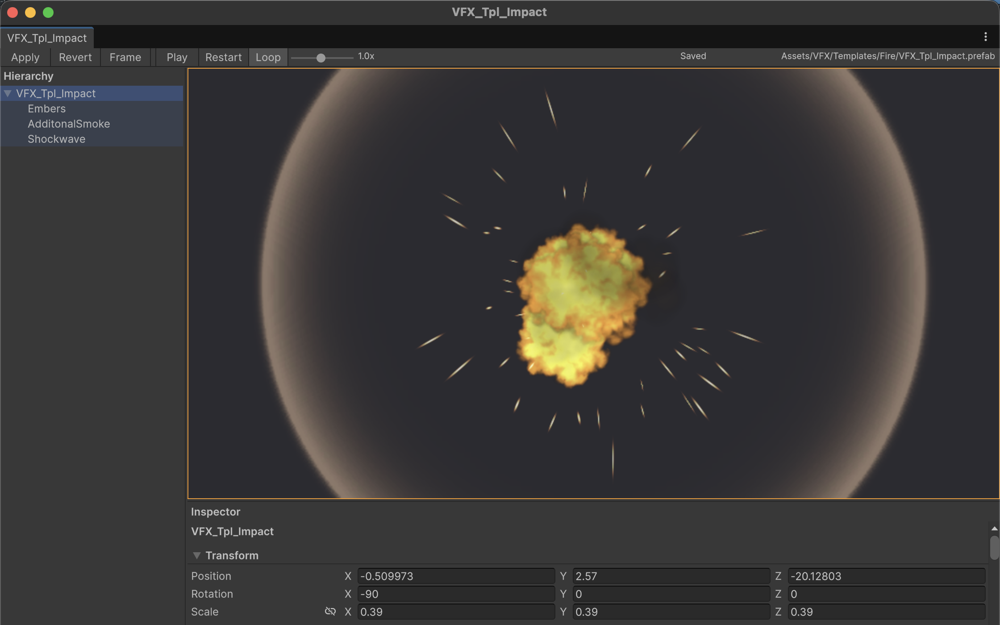
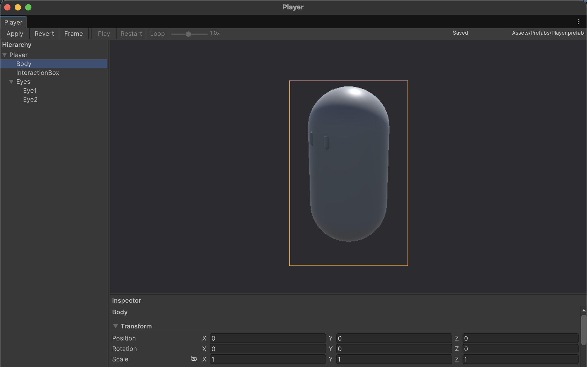
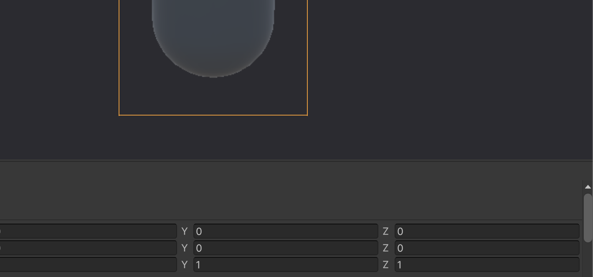

Versión 0.1.0 · solo editor
Un prefab
por ventana.
Multitude abre varios prefabs a la vez: cada uno con su jerarquía, su vista 3D y su inspector. No toca la escena que tienes abierta. Aplicas cuando de verdad quieres y descartas cuando no.
- Unity 6000.6+
- Solo editor
- Sin runtime
- GPL-3.0

Qué cambia
Unity te da un prefab stage y una escena a la vez. Multitude le da a cada prefab su propio documento, y mantiene todos fuera de la escena en la que estás trabajando.
- Ventanas
- Un documento por prefabAbre tantos como necesites. Cada uno conserva su jerarquía, su selección, su cámara y su reparto; acóplalos o flótalos y cambia entre ellos sin perder nada.
- Sesiones
- Aisladas hasta que tú digasEl prefab se carga en su propia escena de preview. No se escribe nada en el asset hasta que pulsas Apply.
- Seguridad
- Apply nunca sobrescribe a ciegasAntes de guardar, compara el archivo en disco con el snapshot que tomó al abrir la ventana. Si cambió, ofrece sobrescribir, seguir editando o recargar.
- Vista previa
- Render que se queda en la ventanaÓrbita, desplaza, acerca y encuadra en 3D. La imagen sale de una copia privada en su propia capa, así que tu escena, el scene view, el game view y el prefab stage no la ven nunca.
- Efectos
- Las partículas se reproducen en ediciónPlay y pausa, restart, loop y velocidad de 0,1x a 2x, avanzando a mano: nada depende de entrar en play mode.
- Reparto
- Paneles al tamaño que quierasArrastra los separadores para redimensionar la jerarquía y el inspector; doble clic para volver al tamaño por defecto. Cada ventana recuerda sus proporciones.
- Inspector
- Los editores propios de UnityLos componentes se dibujan con los inspectores nativos, así que los campos serializados, los editores personalizados y el undo/redo siguen funcionando igual.
- Alcance
- Pequeño a propósitoPrefabs normales y variantes. Los assets de modelo se rechazan con un mensaje. Escenas y ScriptableObjects no entran en esta versión.
Dentro de una ventana
El reparto es el que ya conoces del editor, pero pertenece a un solo prefab y a nada más.


Instalar
Paquete solo para el editor, sin dependencias. Se añade al manifest del proyecto y Unity hace el resto.
Desde el Package Manager
Abre Window > Package Manager, pulsa + y elige Add package from git URL…, luego pega:
https://github.com/USUARIO/Multitude.git
Desde manifest.json
Una ruta relativa a la carpeta Packages del proyecto sirve para un clon local:
"com.gabs.multitude": "file:../../Multitude"
Ejecutar sus tests
El paquete incluye tests EditMode. Regístralo como testable para verlos en el Test Runner:
"testables": ["com.gabs.multitude"]
Abrir un prefab
Clic derecho en un prefab del Project window y elige Assets > Multitude > Open Prefab in Multitude, o usa Tools > Multitude > Open Selected Prefabs.